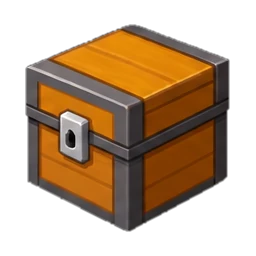
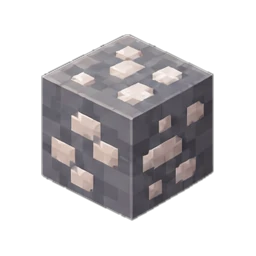
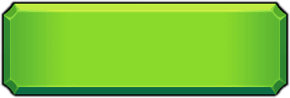

TAMBANG 1
Terkunci · buka untuk melihat isinya
BUKA
Tambang
B
1
2
3
4
5
BOOST SEMUA

0/0
GUDANG
âš¡
Kayu
Batu
Kristal
Deep
Ancient
Mystery
Pekerja
Kereta
Obor
Kotak
Batu

Mineral
Slot
Reset Tambang
Semua objek kembali ke susunan awal. Lanjutkan?
Batal

Reset